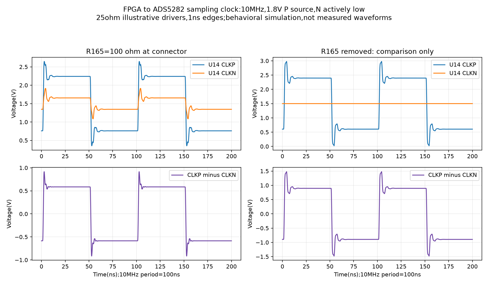
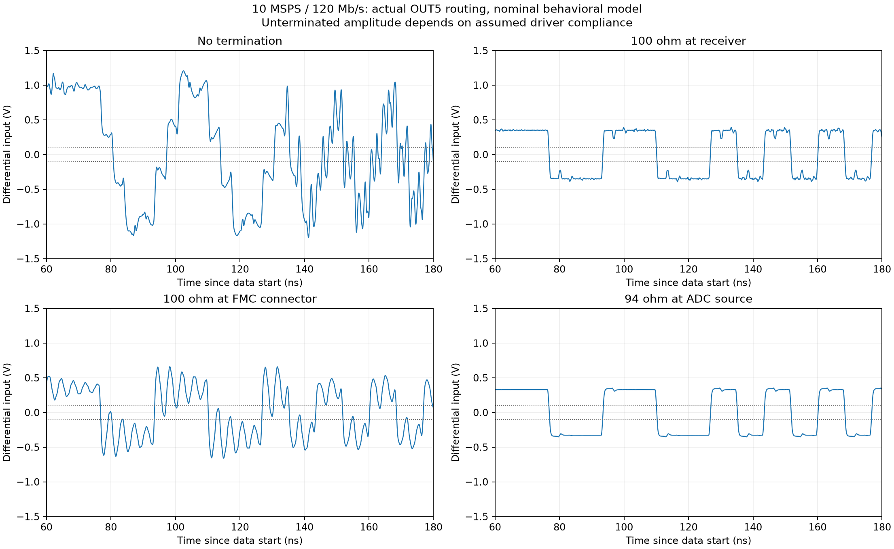
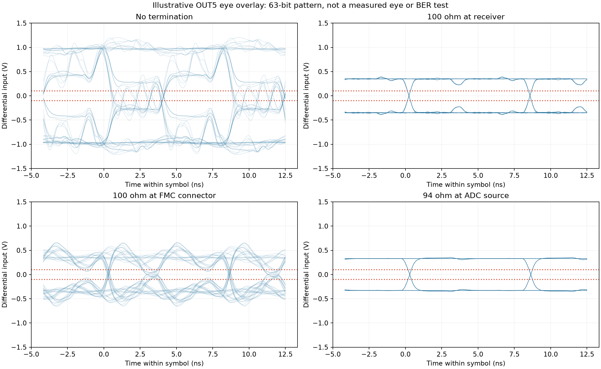

Does this ADC/FMC link need termination at 10 MSPS?
19 October 2026 • KC705 J2, VADJ 1.8 V • ngspice transmission-line sensitivity study
Clock direction checked against the PCB
FPGA 10 MHz sample clock J2/J9 D8,D9 → R165 across P/N → C61/C60 (100 nF) → U14 CLKP/CLKN (pins 58/59) ADC return signals, on separate nets U14 LCLK pins 25/26 → J9/J2 G6,G7 → FPGA: 60 MHz DDR bit clock U14 ADCLK pins 23/24 → J9/J2 H4,H5 → FPGA: 10 MHz frame clock U14 OUT1…OUT5 → other FMC pairs → FPGA: 120 Mb/s per lane
The FPGA supplies the ADC input clock; the ADC serializes each 12-bit sample and generates the return clocks. R165 terminates/loads the input sampling-clock path, not the seven ADC output pairs. Si5351 is not the sampling-clock source for this test. The PCB has C61 on P and C60 on N; schematic reference names are reversed, but both are 100 nF.
R165’s intended schematic value is 100 Ω. Its stale part-number metadata disagrees with that value, so the actual installed component should be verified before relying on the input-clock model.
Separate FPGA-to-ADC sampling-clock simulation
Another12 ngspice runs checked the existing incoming10 MHz clock, independently of the104 return-link runs above. The FPGA drives P between0 and1.8 V while N stays low. R165 is100 Ω at the daughtercard connector, C60/C61 are100 nF, and the ADC input is represented by5 kΩ bias per leg to1.5 V. Carrier routing is approximately124.8 mm followed by approximately78 mm on the daughtercard.
With R165 fitted, all nine tested source-resistance/edge combinations produce a100 ns period at U14CLKP−CLKN. Settled differential swing is0.802–1.458 Vpp; the nominal assumed25 Ω/1 ns driver case is1.171 Vpp. These results establish the modeled presence of the incoming clock, not actual ADC operation.
Transient ringing remains model-dependent. In the nominal case CLKP spans0.353–2.647 V and CLKN1.085–1.915 V. Removing R165 increases the nominal swing and excursions; this is not a recommendation to remove it. The driver impedance and edge assumptions are not calibrated equivalents of the FPGA DRIVE24 setting.
Input-clock findings · Input-clock assumptions/results · Input-clock simulation script

What was simulated
104 completed runs: four termination topologies on all seven actual routes at nominal assumptions; eight sampled parameter combinations on OUT5 and LCLK for each topology; and twelve static-load cases. Data uses a 63-symbol PRBS-derived sequence at 120 Mb/s; LCLK alternates every 8.333 ns and ADCLK every 50 ns. The settling interval is 80 ns. A negative signed center voltage means the model has the wrong polarity at the chosen sampling instant.
| Nominal OUT5 case | Individual FPGA pins | Peak |P−N| | Minimum signed center | Wrong signs / 52 samples | Estimated ≥100 mV window |
|---|---|---|---|---|---|
| Present circuit: no termination | 0.594–1.805 V | 1.210 V | -187 mV | 17 | 3.83 ns |
| 100 Ω at FPGA receiver | 1.003–1.398 V | 0.394 V | 276 mV | 0 | 7.75 ns |
| 100 Ω at daughtercard FMC connector | 0.870–1.530 V | 0.660 V | 97 mV | 0 | 2.75 ns |
| ADC internal 94 Ω (hypothetical enable) | 1.022–1.378 V | 0.352 V | 308 mV | 0 | 7.67 ns |
The window is an idealized finite-pattern phase scan, not an FPGA timing report or bit-error measurement. Route skew relative to LCLK is included for data center sampling; actual clock buffer delay, ADC/FPGA jitter, setup/hold and full receiver phase are not. Some distorted cases may work after phase adjustment, which is different from demonstrating robust operation.


Sampled sensitivities
These sixteen cases per topology are eight parameter combinations on each of OUT5 and LCLK. They are not an exhaustive corner sweep or a production qualification.
| Topology | Cases | Center ≥100 mV in every tested symbol | Worst center | Pin envelope across runs | Estimated window range |
|---|---|---|---|---|---|
| Present circuit: no termination | 16 | 7 | -678 mV | 0.310–2.134 V | 0.17–5.17 ns |
| 100 Ω at FPGA receiver | 16 | 16 | 184 mV | 0.854–1.562 V | 7.42–8.08 ns |
| 100 Ω at daughtercard FMC connector | 16 | 14 | -281 mV | 0.584–1.702 V | 0.00–7.75 ns |
| ADC internal 94 Ω (hypothetical enable) | 16 | 16 | 206 mV | 0.873–1.553 V | 7.25–8.00 ns |
A 100 mV differential comparison concerns logic detection margin. A 600 mV differential amplitude is not an FPGA destruction threshold. DS182’s recommended individual-pin range is −0.2…2.0 V at VCCO 1.8 V; absolute DC and transient limits are separate. Any overshoot from this behavioral model depends on unmeasured driver/package assumptions.
Routing evidence
Daughtercard lengths were extracted from the actual KiCad PCB. Each lane is one connected, unbranched track chain between U14 and J9. Carrier lengths came from the official KC705 rev1.0 Gerber etch-length report, with connector contact mapping checked against its routing report. Connector contacts, package wiring and vertical via lengths are not included in these copper-length totals. The fitted carrier revision remains unconfirmed.
| Pair | Daughtercard P / N (mm) | Carrier P / N (mm) | Combined P / N (mm) |
|---|---|---|---|
| OUT1 | 53.784 / 51.547 | 125.813 / 125.751 | 179.597 / 177.298 |
| OUT2 | 40.553 / 38.722 | 124.503 / 124.542 | 165.056 / 163.264 |
| OUT3 | 29.685 / 27.854 | 124.574 / 124.540 | 154.259 / 152.394 |
| OUT4 | 58.356 / 60.184 | 126.550 / 126.560 | 184.906 / 186.744 |
| OUT5 | 86.265 / 89.403 | 125.149 / 125.168 | 211.414 / 214.571 |
| LCLK | 55.011 / 56.502 | 125.188 / 125.144 | 180.199 / 181.646 |
| ADCLK | 49.977 / 51.468 | 138.662 / 138.702 | 188.639 / 190.170 |
Putting a resistor at the daughtercard FMC connector leaves 125–139 mm of KC705 routing beyond it. This is why that placement was modeled separately from a resistor beside the FPGA receiver.
Model assumptions and limits
- Driver: 3.5 mA differential current, 1.2 V common mode; default internal termination off. A 0.7 ns full transition approximates TI’s 0.2 ns crossing from −100 to +100 mV under a 100 Ω load.
- Finite driver compliance is an assumed nonlinear limit: differential knees 0.55, 0.9 and 1.2 V. These are sensitivity inputs, not measured or specified ADS5282 no-load limits. The modeled common-mode feedback is idealized.
- ADC package: 0.5 Ω, 2 nH and 0.3 pF per leg from TI’s QFN model documentation, plus 2 pF die capacitance. Receiver package inductance is assumed 1 nH; receiver capacitance is swept 3–10 pF.
- Nominal differential line impedances are 100 Ω. Daughtercard sensitivity is 70–130 Ω; carrier 90–110 Ω. The carrier targets 100 Ω ±10%; daughtercard impedance is not field-solved. Odd-mode line equivalents omit full coupling and connector discontinuities.
- Propagation: nominal 6.3 ps/mm daughtercard and 7 ps/mm carrier plus 0.1 ns for unextracted interconnect. Sweeps cover 5.8–7.2 and 6.7–7.3 ps/mm. Source current2.8–4.2 mA, edges0.315–1.4 ns and common mode1.1–1.3 V are sampled engineering sensitivities, not jointly certified corners.
- Internal termination case is placed at the modeled ADC die, before package inductance. Resistance75.2–112.8 Ω covers TI’s stated ±20% tolerance around94 Ω.
- No model covers power sequencing, an unpowered FPGA, ESD, latchup, thermal damage or the analog shunt measurement chain. The internal termination defaults off and this study does not validate its startup transition.
Why the TI IBIS download was not called a validated no-load simulation: SBOC249 supplies models specifically characterized for effective 50, 75 and100 Ω loading. Its documentation describes load-dependent pull-up behavior caused by common-mode feedback. Applying the100 Ω tables to an open circuit and treating the answer as exact would be misleading. The files were inspected; this study deliberately uses disclosed behavioral assumptions instead.
Practical conclusion
- Do not treat the current
DIFF_TERM FALSE, ADC-internal-termination-off circuit as proven merely because the sample clock is10 MHz. The return data rate is120 Mb/s and the edges are much faster than one sample period. - Receiver-end100 Ω remains the documented, conventional design. A resistor at the daughtercard connector is a different topology and shows reduced margin in this study.
- The modeled source94 Ω case is worth investigating as a minimal-hardware alternative. It would require an ADC register change, a reviewed startup sequence and measurements at the FPGA before being accepted. These simulations alone do not authorize powering the current unverified connection.
- FPGA internal termination remains unavailable for this HR-bank LVDS25 use at VADJ1.8 V; no settings were changed.
Reproduce and inspect
Simulation script · All104 results · Assumptions, route data and hashes · Receiver-terminated example netlist · Unterminated example netlist
Run python simulate_link.py, then python build_report.py. Requires NumPy, matplotlib and the KiCad10 ngspice DLL. Generated netlists and engine logs are retained in their subdirectories.
Primary sources
- TI ADS5282 datasheet, pp3–4,13,20: output rates, load, drive and internal termination.
- TI SBOC249 LVDS IBIS package and model guide: package parameters and characterized-load limitations.
- AMD DS182, pp1,3–5,11: Kintex7 electrical limits.
- AMD UG471, pp91–93: HR LVDS25 termination restrictions.